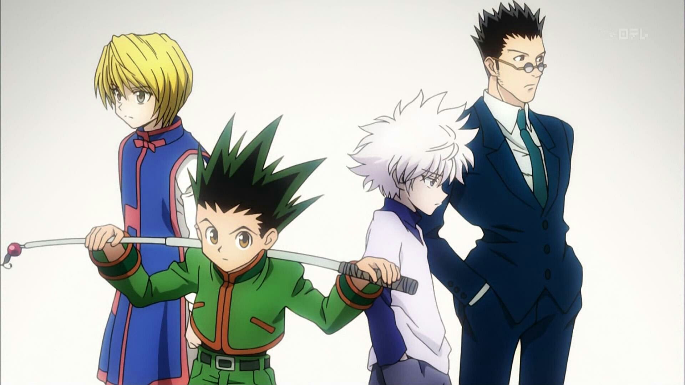
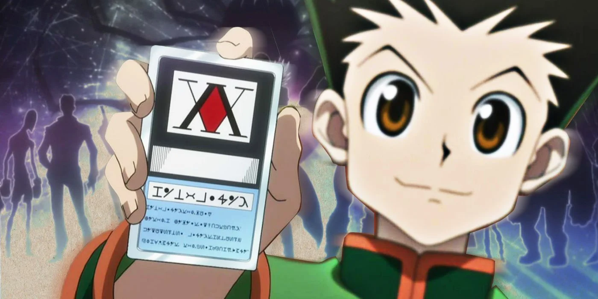

Hunter×Hunter(ハンター×ハンター Hantā×Hantā?, pronúncia japonesa da expressão inglesa Hunter×Hunter, estilizado como HUNTER×HUNTER; pronunciado "Hunter Hunter", significa Caçador Caçador em português) é uma série de mangá escrita e ilustrada por Yoshihiro Togashi. Os capítulos são serializados na revista Weekly Shōnen Jump desde 3 de março de 1998, onde são compilados e publicados em formato tankobon pela editora Shueisha, embora o mangá tenha frequentemente entrado em hiato desde 2006. No Brasil, o mangá é licenciado e publicado pela editora JBC desde 2008.
Sinopse
A história tem como protagonista Gon Freecss, um menino de 12 anos que quer encontrar o seu pai a todo o custo, então ele decide se tornar um Hunter, assim como ele, e de alguma forma encontrar o seu paradeiro. À medida que a história avança, Gon faz amizade com outros três Hunters aspirantes: Leorio, Kurapika e Killua, que o acompanham em suas aventuras.
Personagens Principais
Gon Freecss é o protagonista da história, um menino de 12 anos que deseja se tornar um Hunter para encontrar seu pai, o lendário Hunter Ging Freecss.
Killua Zoldyck é um menino de 12 anos e melhor amigo do protagonista Gon Freecss. Killua pertence a uma famosa família de assassinos, a família Zoldyck.
Kurapika Kurata é o último membro do clã Kuruta, conhecidos pelos seus olhos escarlate. O seu objetivo consiste em perseguir e destruir o grupo responsável pela destruição de seu clã, o Gen'ei Ryodan.
Leorio Paradinight é um adolescente que inicialmente disse estar participando do Exame Hunter exclusivamente por dinheiro, mas depois revela que é porque ele quer se tornar um médico, e precisa de dinheiro para pagar os seus estudos.

Imagem com Kurapika, Gon, Killua e Leorio.
Elementos do Enredo
Hunters
Os Hunters (ハンター Hantā?) são membros licenciados de elite da humanidade, capazes de rastrear tesouros secretos, animais raros, ou até mesmo outros indivíduos. Para obter uma licença deve-se passar no rigoroso anual Exame Hunter, organizado pela Associação de Hunters, que tem uma taxa de sucesso inferior a um em cem mil. Um Hunter pode ser contemplado com até três estrelas; uma única estrela por fazer "certos feitos notáveis"; duas estrelas se for mentor de um outro Hunter que tenha ganhado uma única estrela; e, finalmente, três estrelas por "executar vários feitos notáveis em várias áreas".

Imagem com o protagonista segurando sua licença Hunter.
Nen
Nen é a capacidade de controlar a energia da própria aura, que é constantemente emitida por aqueles que sabem disso ou não. Há quatro técnicas básicas de Nen: Ten mantém a aura ao arredor do corpo, fortalecendo-o para ser utilizado como defesa; Zetsu suprime o fluxo externo da aura, útil para ocultar a própria presença e aliviar a fadiga do indivíduo; Ren permite que um usuário produza mais Nen; e Hatsu, que é de uso específico de uma pessoa que utiliza Nen. Usuários de Nen são classificados em seis tipos com base em suas habilidades Hatsu; Potenciadores fortalecem e reforçam as suas capacidades físicas naturais, Emissores projetam aura fora de seu corpo, Manipuladores controlam objetos ou seres vivos, Transmutadores alteram o tipo ou as propriedades de sua aura, Conjuradores criam objetos fora de sua aura, e Especialistas tem habilidades únicas que não se enquadram nas categorias anteriores. Um usuário de Nen pode fazer um Contrato pelo qual se compromete a seguir certas Limitações, e em troca suas habilidades são reforçadas em relação à forma como essas limitações são rigorosas.